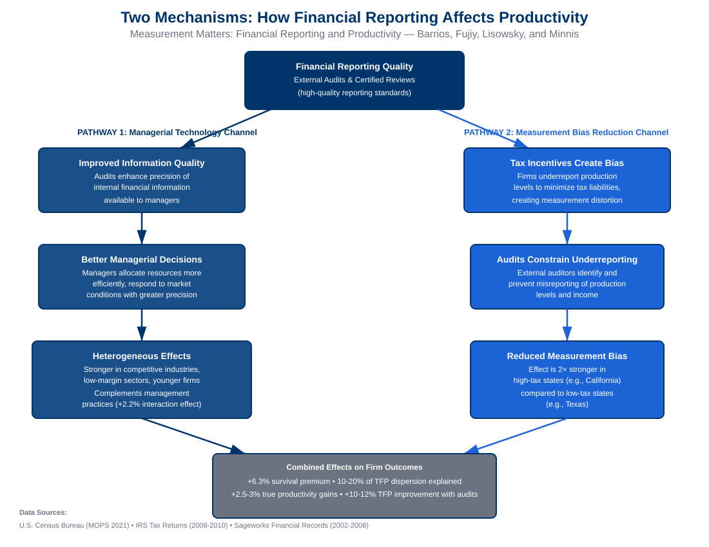

Abstract
We examine how differences in financial reporting practices shape firm productivity. Using comprehensive data from the U.S. Census Bureau, tax return data from the Internal Revenue Service (IRS), and detailed financial records from Sageworks, we find that variation in reporting quality explains 10-20 percent of intra-industry total factor productivity dispersion. Leveraging new audit questions in the U.S. Census Bureau's 2021 Management and Organizational Practices Survey (MOPS), we find evidence of complementarity between the effects of financial audits and management practices to drive firm productivity.
We then examine the underlying mechanisms. First, audits function as a managerial technology, improving the precision of internal information and raising efficiency, with stronger effects in competitive, low-margin industries and among younger firms. Second, exploiting cross-state variation in tax incentives, we show that audits constrain underreporting and mitigate the downward bias in measured productivity. Together, these results highlight the underrated importance of financial reporting quality driving firm productivity.
Key Findings

Figure 1. Left: Financial reporting quality accounts for 15% of TFP dispersion (within 10-20% range), comparable to IT investments and management practices. Right: Both audits and management practices independently improve productivity by 2.5-3% and profitability by 0.7-0.9%.
Reporting Quality Explains Productivity Dispersion
Financial reporting quality accounts for approximately 10-20 percent of intra-industry total factor productivity (TFP) dispersion between the 10th and 90th percentiles, comparable to other major drivers like IT investments and management practices.
Complementarity with Management Practices
Audits and structured management practices each independently improve productivity and profitability (2.5-3.5% and 2.7-3.4% respectively), with positive interaction effects when combined, suggesting they reinforce one another.
Audits as Managerial Technology
External audits improve firm decision-making by enhancing information precision, with stronger effects in competitive industries and among younger firms that benefit disproportionately from external discipline and guidance.
Tax Incentives and Measurement Bias
Audits constrain underreporting driven by tax minimization incentives. The audit effect on measured productivity is nearly twice as strong in high-tax states, indicating audits reduce measurement bias from tax-motivated misreporting.
Research Contribution
This paper identifies financial reporting quality as a significant and underexplored determinant of firm-level productivity, filling a gap in the economics and management literature. Using three distinct and independently compiled datasets on private U.S. firms, the research documents that financial measurement quality—proxied by external audits and adherence to high-quality reporting standards—explains a substantial portion of productivity dispersion comparable to well-documented drivers such as management practices and technology adoption.
The findings reveal two distinct mechanisms: audits enhance actual firm productivity by improving managerial information quality and decision-making (particularly in competitive industries and younger firms), and they also reduce measurement bias by constraining tax-motivated underreporting. The paper reframes financial reporting not as a passive compliance function but as an active managerial technology with direct implications for operational efficiency and firm performance. These insights bridge the economics and accounting literatures, offering broader perspectives on the determinants of firm-level productivity heterogeneity.

Figure 2. Conceptual framework showing two complementary mechanisms. Left mechanism (blue): Audits improve internal information quality, leading to better managerial decisions and true productivity gains (+2.5-3%), with stronger effects in competitive industries and younger firms. Right mechanism (orange): Tax incentives create manager discretion to underreport, creating measurement bias; audits constrain this underreporting. The effect is 2× larger in high-tax states, confirming the bias-reduction channel. Both mechanisms are validated across three independent data sources (Census MOPS, IRS, Sageworks).